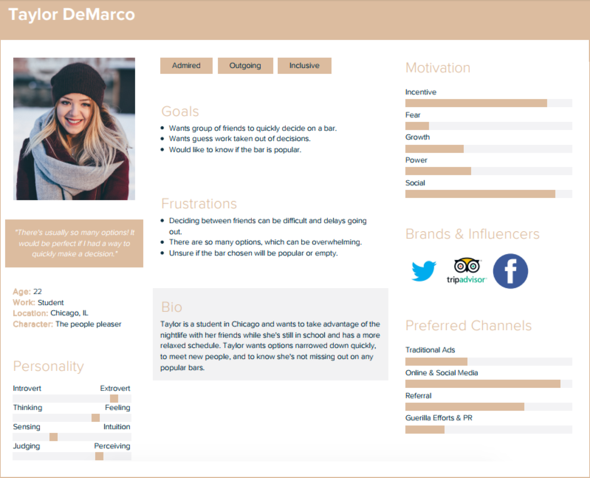
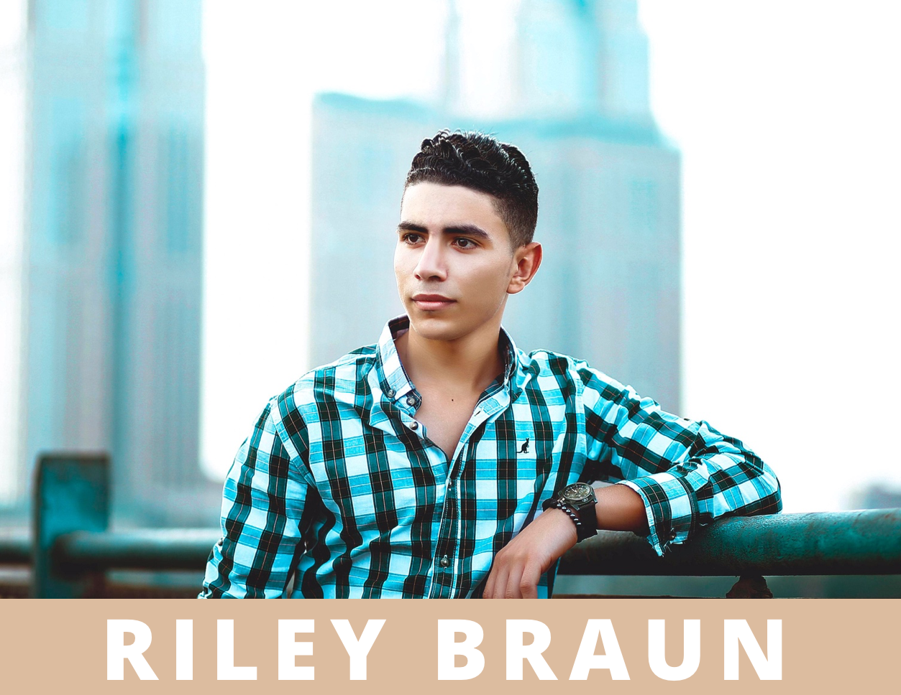
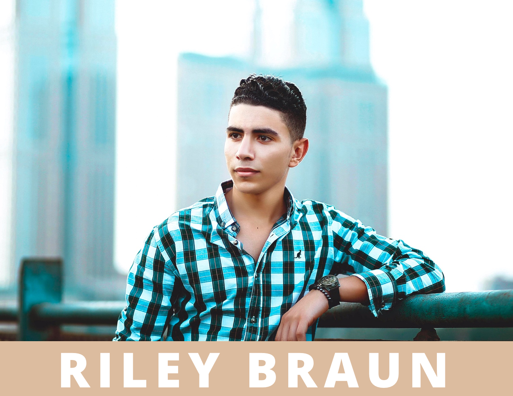
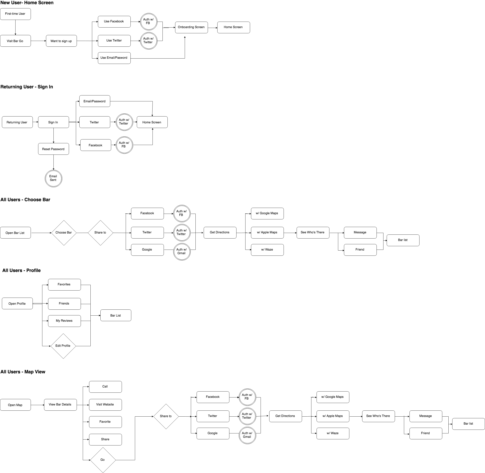
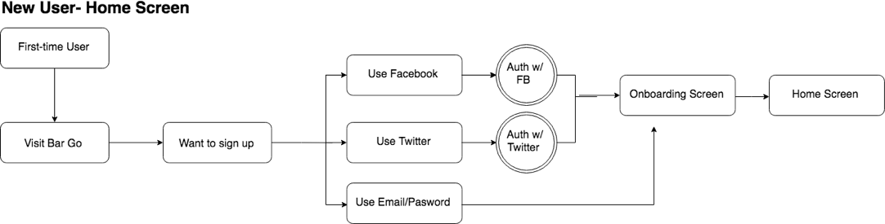
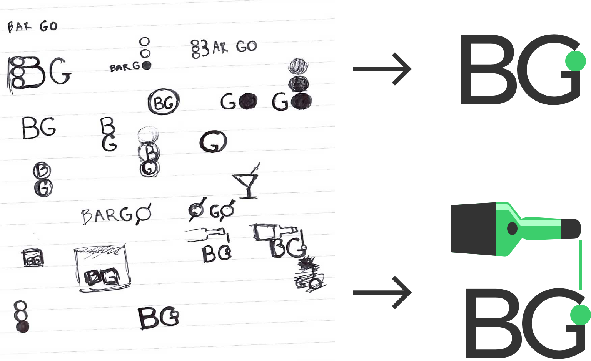
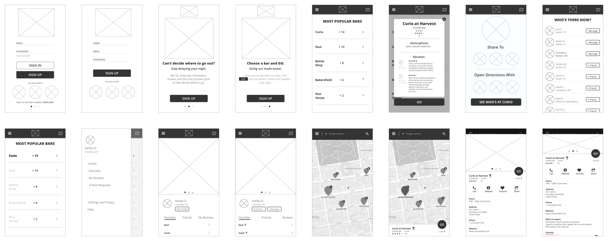
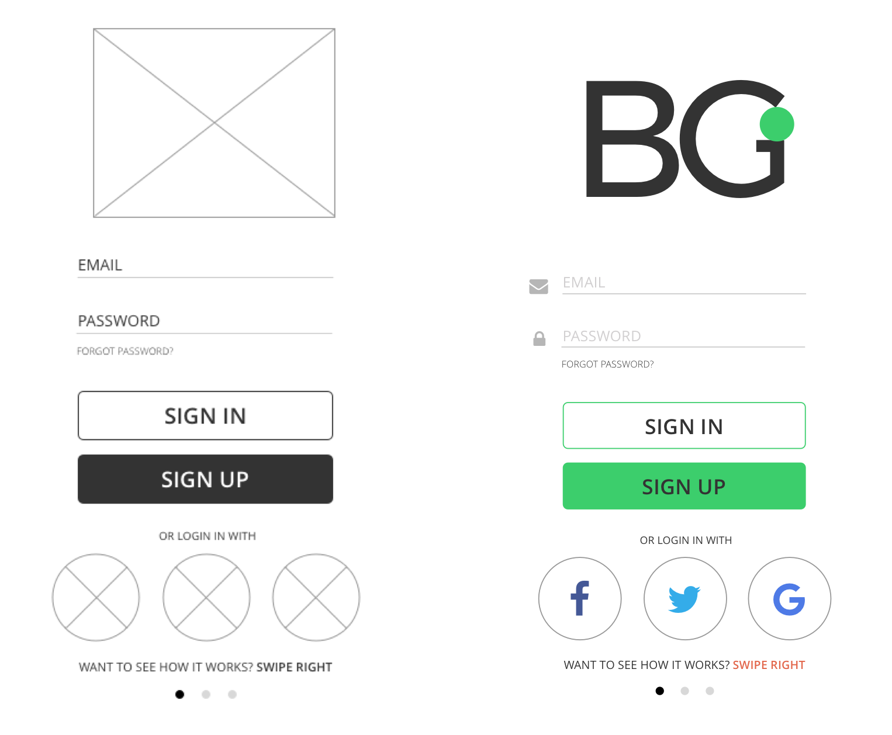

Process
Bar Go began with detailed user research and competitive analysis, which informed every decision that was made for the app. After studying the results, I started with the branding, which included the logo, color palette and typography. From there, I created user personas and flows, wireframes, mockups and then moved to prototyping.
User research highlights
48%
of users say the most important factor when deciding on a bar is recommendations and reviews.
59%
of users say they make recommendations when family and friends visit a new place.
62%
of users said that apps used to find information on bars are unhelpful.
Respondents said they would like an app that allows them to save their favorite bars so they can make recommendations more easily.
Competitive analysis
The competitive analysis revealed how Bar Go could differentiate itself from Yelp, Google Maps and Facebook. After a study of the strengths and weaknesses of these competitors, we found there was an opportunity to combine the detailed information provided by Google Maps and the social component of Yelp and Facebook to provide reviews and recommendations while also making connections with other users.
User Personas
The research conducted allowed us to create three personas, which helped to round out the user experience of Bar Go. Lucy prefers upscale bars and wanted a quick snapshot of the atmosphere to help make a decision quickly. Riley wanted to know which were the most populated bars and wanted the information in one place so he didn’t have to spend time researching different bars. Taylor lives in a large city and has so many options when deciding where to go out. She wanted an app that would help her and her friends make a decision quickly.
 

User Stories and Flows
User stories and flows were created to help inform the structure of the app. After receiving initial user feedback, the flows were simplified to achieve a more effortless experience.
 Branding
I began the branding process by designing the logo and selecting the color palette and typography of the app. Open Sans was selected as the font for both headlines and body text by using varying weights. The color palette was kept simple, to emphasize a simple and straightforward design. The green and burnt orange color scheme was selected as a version of a traffic lights’ stop and go colors. The color palette also allowed Bar Go to differentiate itself from the colors of Facebook, Yelp and Google Maps.
#3CCE6C
#FFFFFF
#E5684D
#A04836
#D1CFD0
#333333
Logo
I began sketching the logo and ran preference tests before moving to a digital rendering. The green circle represents the go signal on a traffic light and is accompanied by the letters B and G for Bar Go. I wanted to keep the app minimalistic and modern, which is why I chose this logo.
Wireframes
The wireframes began with low-fidelity mockups utilizing the user flow feedback from testing. After usability tests, I moved to high-fidelity mockups. I began with navigation and preference tests to gather user feedback and make sure the user experience was cohesive and consistent with the design layout. Users were able to navigate the app with confidence but the button placement on screens was tweaked based on user feedback.
 Mockups
After the designs were finalized, I started adding color and images to Bar Go. Once the designs were fleshed out, I created clickable prototypes in InVision and gathered additional feedback about the user experience. The review section was changed to a simpler layout and the map view icons were enlarged to emphasize the location of bars.

Prototype
Conclusion
Bar Go was created to help provide people visiting a new city an easy way to find nightlife information. Users were able to find bar information quickly, read reviews and recommendations and update their social network as to where they were headed.
Creating an app required a different approach, which was a great learning experience after designing a website. The user testing provided invaluable feedback, which was used to improve the user experience while also being mindful of the design process.
We arrived at an app that delivered a positive and straightforward experience while providing information to help users make an informed decision quickly on where to go out. The app also allows people to connect, which creates a social component and ensures a dynamic experience while using the app.